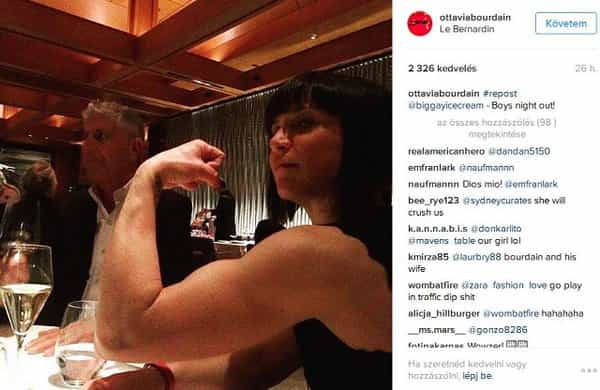

< < < Back
Return Of Kings Correctly Predicted The Demise Of Anthony Bourdain’s Marriage – Return Of Kings
Because of professional decisions we both have made, my husband and I have been for years in an unconventional relationship.
— Ottavia Bourdain, perhaps hinting at something else
Television chef and culinary critic Anthony Bourdain has separated from his Italian-born wife Ottavia, only four months after Return Of Kings seriously questioned her behavior around other men. Earlier on, members of the Roosh V Forum in particular were noting the excessive cosiness and almost certain chemistry between Ottavia and her MMA “training partners” on Instagram over a long period of time.
The jaw-dropping frolicking included gems like this one at the family house while Bourdain was presumably away working:

Back in May I said that “Bourdain’s politics are liberal, but we do not revel in his possible marital pain.” I express the same sort of sentiment today about his most recent relationship news. However hideous his views are, including his over-the-top anger against Donald Trump (jealousy-induced, maybe?), it is hard not to feel some sympathy for him. Moreover, his marital woes provide some very important lessons for other men.
Was the writing on the wall for a long time?

Unfortunately, Anthony Bourdain funded this lifestyle for Ottavia.
There is no doubt that Anthony Bourdain suffered a de facto cucking over a long period of time, even if his wife did not cheat on him with younger, more physically fit and virile men. For a start, Bourdain’s millions enabled Ottavia to devote her time (read: life) to MMA training.
He was paying her to train with younger men and take copious numbers of Instagram photos with them. While he raked in the cash that propped up their lavish lifestyle, Ottavia remained free to basically pursue a hobby that gave nothing to Bourdain. Because many champion MMA fighters often earn peanuts, she herself, with much less fighting prowess than even other female competitors, was paying precious little to keep their luxury indulgences going.
Ironically, Ottavia, the one who did not contribute anywhere near as much to the marriage, appeared to resent him for the time he spent away working. So, on the one hand, women like this expect to be compensated for their presence in the form of material abundance, but invest their own energies into things that make zero difference to the relationship. This dynamic, especially as it features an overworked Bourdain, reminds me of the following red pill cartoon:
So what did Ottavia actually give to Bourdain in return? She might be a good mother, but publicly she seems far less enamored with family life and her child than MMA. People might say that privacy is the overriding reason her social media presence does not mention her daughter more, but if she was really interested in privacy, why would she have all the photos getting cosy with other men when she’s married? That kind of behavior only leads to popular interest and questioning about infidelity, not privacy.
Then there’s the vexed question of Ottavia’s looks. She is far from a stunner. New York is replete with better looking women than her. The couple actually look like they are brother and sister. Even with the addition of make-up and other female beauty enhancers, the age difference here looks to be five years, not 22:
She also seemingly loved to rub it in his face that he was an aging, weak man, despite the fact that both her lifestyle and her rather salient public profile was all due to him:

Given all this, how was their relationship even a marriage?
Lessons for men
Always dig for the lessons beneath the pain and/or betrayal.
We can take three key lessons from the Bourdains’ marriage implosion. Firstly, beware of idle women. Sure, Ottavia has been practicing MMA for a number of years. It is definitely exercise, something far too many women nowadays avoid like the plague. But it was definitely idle in the sense that the inordinate time she spent on it did not help or enhance her marriage, let alone give back to Anthony Bourdain. It generated comparatively nothing financially and did diddly-squat apparently to make Ottavia’s husband’s life easier or more pleasant. It also gave her the opportunity to meet countless younger men she could pose and spend time with, probably much more time than she spent in the arms of her husband.
The second point is that a woman’s backstory matters. Ottavia, from Lombardy in Italy, quit her studies, purportedly in dentistry, and headed to the United States to chase an Irish rocker she was infatuated with. Whilst ending one life path and pursuing another is often the definition of personal happiness, I question her motives in making this choice. It is not as if she has carved out her own lucrative career in the following years.
Ottavia’s current public profile and ability to train in MMA are the direct result of Anthony Bourdain’s largesse. If Bourdain had pondered his wife’s antecedence more prior to marrying her (assuming he had the information), he might have realized he was falling for an impulsive woman and not someone who would, commensurate to her abilities, contribute equally to the marriage. Almost any woman can pop out a child and give the obligatory level of care for it. Yet a proper woman should offer something more, most notably for a well-known and superficially successful man like Bourdain, who ostensibly has the option of being far more picky in mate choice.
Finally, and related to the other lessons, men need to ruthlessly count their relationship costs. One can do this in both gross and relative terms, and it is not simply about money. Whatever inconvenient truths such mental inquiries reveal, you need to ask the hard questions about whether a woman is giving her all to you or something close to it. For instance, how many hours did Bourdain work for Ottavia and how many did she work for him? If you find a particularly large differential in effort when you are already effectively funding a woman’s wealthy lifestyle, you are more married to a prostitute than an wife.
Bourdain is in many respects a hugely successful man. When it comes to his soon-to-be ex-wife, however, he has all the faults, miseries, and pains of many other men. He may be a liberal, but he’s a liberal you can feel sorry for in this situation.
Read More: Is Anthony Bourdain Getting Cucked By His MMA Wife?